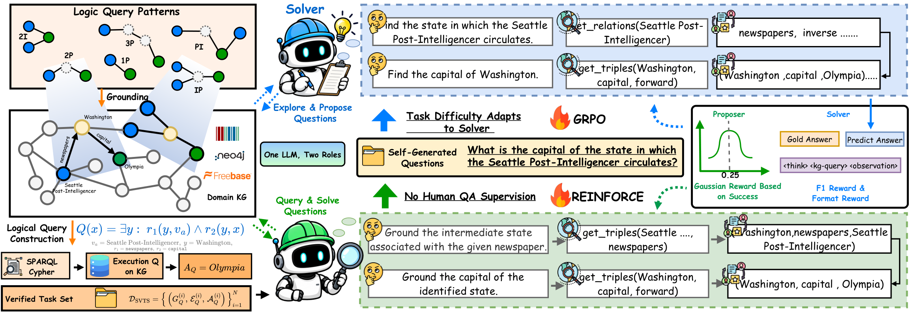
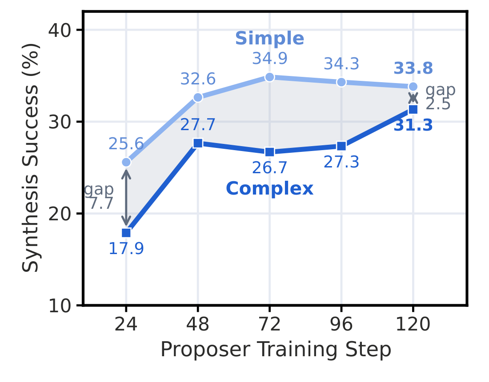

Evolve on Graph: Self-Evolving Knowledge Graph Reasoning without Question Annotations
1Beijing University of Posts and Telecommunications 2University of Helsinki 3University of Amsterdam 4Nanyang Technological University
*Equal contribution †Corresponding authors
Reasoning on Knowledge Graphs without Question Annotations
Knowledge graphs give large language models reliable facts for multi-hop reasoning, yet most KGs in real-world domains such as finance and industry have no question–answer annotations. Without them, existing methods struggle to improve LLM graph reasoning: training-free agents cannot improve their exploration through interaction, reinforcement-learning agents depend on QA data annotated by humans or synthesized by other models, and training data built offline has a fixed topology mix that cannot follow the agent's ability.
We propose Evolve on Graph (EoG), which lets an LLM self-evolve its graph reasoning using only the KG itself. Through Graph Self-Play, a single LLM alternates between a Proposer that poses questions and a Solver that answers them by exploring the graph. Symbolically Verifiable Topology Synthesis (SVTS) samples reasoning topologies on the KG and executes the corresponding logic queries, so every task comes with a correct and complete answer set. A Boundary-Aware Graph Curriculum rewards the Proposer by the variance of the Solver's scores, which keeps questions at the Solver's capability boundary and lets complex topologies enter training as the Solver improves.
On six benchmarks over Freebase, Wikidata and an industrial automotive KG, EoG outperforms prompting-, retrieval- and agent-based methods. With Qwen2.5-7B-Instruct it reaches 61.55 average Hit@1 on five public benchmarks, 7.46 points above the strongest annotation-free baseline, showing that LLM graph reasoning can improve through self-play without QA annotations.
How EoG Works: One LLM, Two Roles, One Graph

Graph Self-Play
One policy alternates between the Proposer and the Solver. Both roles explore the same graph with get_relations and get_triples, so the model gains exploration experience whether it poses or answers a question.
SVTS
Symbolically Verifiable Topology Synthesis grounds logical query patterns on real facts and executes the queries on the KG, so every task comes with a correct and complete gold answer set. Each Proposer question is kept only if a verifier can answer it from the triples the Proposer retrieved.
Boundary-Aware Graph Curriculum
The Proposer is rewarded by the variance of the Solver's scores on its question. Questions on the Solver's capability boundary score highest, so complex topologies enter training as the Solver improves.
Results on Six Benchmarks over Three Knowledge Graphs
We evaluate on six benchmarks over three KGs: WebQSP, CWQ and GrailQA over Freebase, GTSQA and WikiWebQuestions over Wikidata, and IndustryCarBench over an industrial automotive KG. The table reports Hit@1 / F1 (%); bold marks the best result in each column for the selected backbone.
A KG with no training questions
IndustryCarBench has 500 expert-written questions over a real automotive KG and no training set, so annotation-based RL agents cannot be trained on it. EoG trains on the KG alone and exceeds the strongest baseline, ToG, by 17.80 Hit@1.
| Method | Hit@1 | F1 |
|---|---|---|
| ToG | 67.00 | 53.94 |
| PoG | 56.60 | 47.27 |
| Graph Reranker | 49.80 | 40.64 |
| CoR | 29.20 | 23.76 |
| Text-Based Retrieval | 25.60 | 23.31 |
| EoG | 84.80 | 78.16 |
The curriculum follows the Solver
As the Solver improves, the Proposer's synthesis success rate on complex topologies rises from 17.9% to 31.3% while simple topologies level off near 34%, without any manual difficulty schedule.

One Round of Self-Play
One round of self-play from Qwen2.5-7B training on Freebase, shown verbatim. The Proposer writes a question for a task; the Solver answers it in five rollouts.
Citation
@article{sun2026evolve,
title = {Evolve on Graph: Self-Evolving Knowledge Graph Reasoning without Question Annotations},
author = {Sun, Zongyuan and Zhao, Shuai and Shu, Ke and Zhu, Ziyue and Wu, Shangyang and Lin, Yuanlin and Wang, Tao and Li, Shiyue and Du, Yingjun and Luu, Anh Tuan and Luo, Haoran},
journal = {arXiv preprint arXiv:2610.35598},
year = {2026}
}